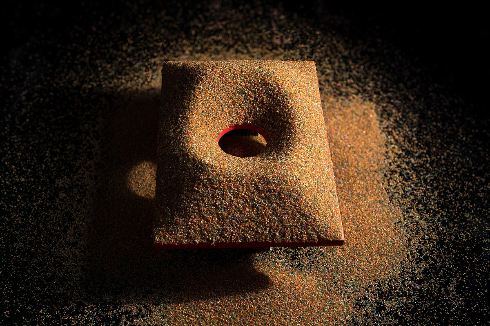

<a href="https://ja.m.wikipedia.org/wiki/%E3%83%95%E3%82%A1%E3%82%A4%E3%83%AB:Sandpile_Matemateca_11.jpg">Sandpile Matemateca 11.jpg</a> © 2016年12月16日, 15:03 by <a href="https://ja.m.wikipedia.org/wiki/%E5%88%A9%E7%94%A8%E8%80%85:Horadrim"> Rodrigo Tetsuo Argenton</a> is licensed under <a href="https://creativecommons.org/licenses/by-sa/4.0/">CC BY-SA 4.0</a>
